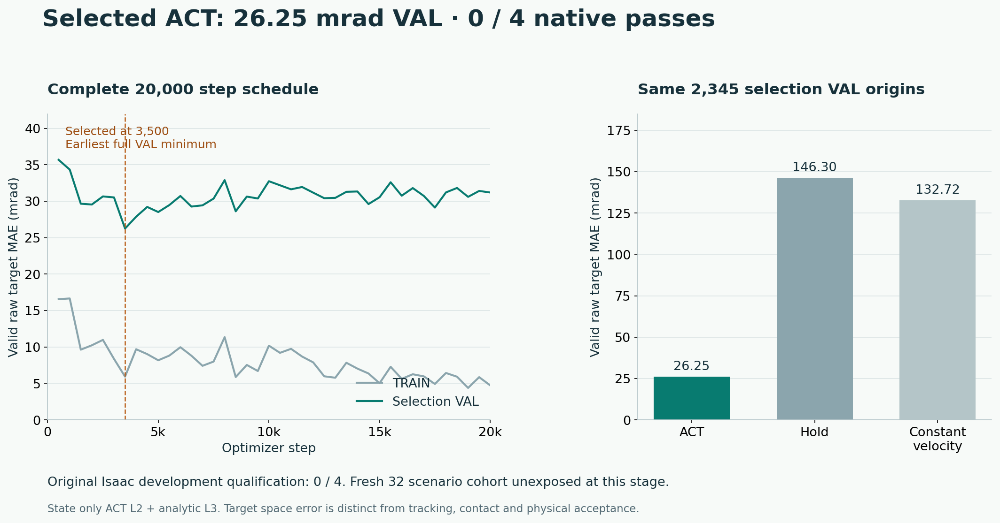
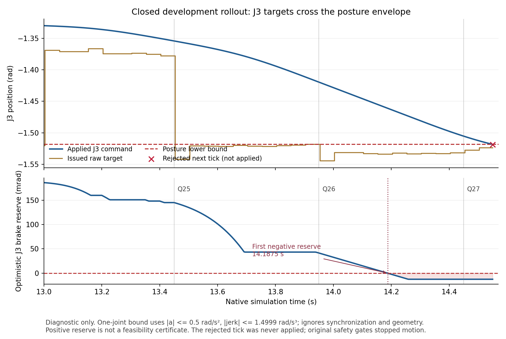

Research question
Did the exported examples
reach the handoff?
The former export admitted a query only when it had all twenty future action cells. Near a phase boundary or parking transition, that rule removed the last second of genuine teacher behavior. Its closest retained tangential distance was 5.132 mm in TRAIN and 5.134 mm in selection VAL. The original handoff requires a tangential condition within 2 mm, together with independent gap, rotation, speed and native state checks.
The corrected export admits a nonempty, contiguous prefix of real future teacher cells and masks its unavailable suffix. On the same eighteen physically qualified captures, TRAIN grows from 7,558 to 8,090 origins and selection VAL from 2,193 to 2,345. The closest encoded tangential distances become 1.910 mm and 1.988 mm. A policy is not queried inside an instantaneous handoff; coverage is assessed at real query opportunities.
Label contract
Keep the real futures.
Mask the missing suffix.
Every origin retains two real causal observations. Every supervised future is an actual complete twelve tick teacher setter interval. STOP, analytic alignment, partial native cells and injected perturbations provide no future action labels. Actual perturbations can appear in past observations: they are the recovery states the teacher must handle.
The mask controls the official ACT loss, TRAIN action normalization and reported validation metrics. A real CPU integration check used prefix lengths 1, 10 and 20: changing masked action values to one million changed the official loss by exactly zero. This used a fresh untrained policy and no parameter updates. A separate complete comparison found all six numerical arrays bit identical for every legacy full H20 window.
The new mask schema and protocol are explicit. Original full H20 datasets and historical experiment receipts remain intact. Native physical qualification still precedes label extraction.
Evidence before expansion
Teach the recovery.
Measure the closed loop.
Actual expert recovery
Perturb the executed motion.
Query the teacher from that state.
The corrected qualification batch declares eight TRAIN episodes across two bodies, two recorded seated poses and R3/L3. A seeded 0.03 rad target perturbation begins in the final approach, at declared 35 mm or 60 mm query distances. These are perturbation settings, not guaranteed measured displacements. The expert replans from the measured state while retaining the live command position, velocity and acceleration.
An initial R3 recovery proposal encountered a native terminal numerical degeneracy. The original numerical bound stays fixed. Alternative tiny waypoint candidates receive numerical preflight followed by the complete original collision, posture and finite difference preview. An independent logging fix attributes the twenty four actual stationary STOP samples to their true setter. The earlier incomplete label ledger remains excluded from training.
Each admitted recovery still completes actual approach, contact, at least three seconds of qualified holding, release and home. Every attempted episode, rejection and missing receipt stays visible. The corrected eight case batch has closed: seven physically qualified recovery episodes contribute 152 real query origins. One numerical recovery rejection supplies no positive labels. The combined data contain eighteen nominal and seven recovery episodes, with 8,242 TRAIN and 2,345 selection VAL origins. The full planned data ledger retains twenty nominal slots, including two CPU unavailable plans, and all eight recovery attempts: 25 positive episodes / 28 planned slots. This small batch does not meet a population qualification gate.
| TRAIN body | Known pose | Site | Outcome | Real origins |
|---|---|---|---|---|
| p001120 | 1 | R3 | Qualified | 32 |
| p001120 | 1 | L3 | Qualified | 20 |
| p001120 | 2 | R3 | Qualified | 21 |
| p001120 | 2 | L3 | Qualified | 20 |
| p000833 | 1 | R3 | Numerical preview rejection | 0 |
| p000833 | 1 | L3 | Qualified | 19 |
| p000833 | 2 | R3 | Qualified | 20 |
| p000833 | 2 | L3 | Qualified | 20 |
The complete data ledger retains all twenty eight planned slots. Recovery physics and labels were independently rechecked before training.
Actual model protocol
The same ACT backbone.
Corrected supervision.
The model is the pinned official 2,658,823 parameter ACT with no VAE. It takes q7, goal relative position3, rotation6D and prescribed goal confidence1 as state17; two observations provide 34 features. It predicts twenty raw joint targets relative to the fixed query origin and executes up to ten cells before querying again. The native handoff can interrupt execution.
The first repaired run completed 20,000 optimizer steps and forty full masked selection VAL evaluations. The earliest minimum selected step 3,500: full chunk raw target MAE was 5.933 mrad TRAIN and 26.254 mrad selection VAL. On the same selection origins, holding the current state scored 146.301 mrad and constant velocity 132.718 mrad. Actual selected CUDA predictions reproduced on CPU within the original numerical tolerance. These are offline target errors, not successful contact.
Half each minibatch samples real TRAIN origins within 60 mm of the prescribed pose; half samples uniformly. No fabricated joint state noise is used. Training to step 20,000 reduced TRAIN error but gave 31.199 mrad selection VAL error; selection uses the full validation minimum rather than the last weights.


This ACT is state only. RGB, depth and Hall remain recorded in simulation, and Hall participates in analytic contact control. They are not ACT model inputs in this experiment. Learned L2 approach is followed by the original analytic L3 alignment, contact, holding, release and home.
Actual development result
Better offline fit.
Zero completed contact cycles.
The selected weights actually ran in Isaac from home on four explicit TRAIN or selection VAL cases. All four failed the original physical qualification. The native guards stopped the motion; no analytic expert substituted for learned L2. The fresh eight identity cohort was not exposed.
| Body / role | Site | Native ticks | Actual stopping reason |
|---|---|---|---|
| p001120 / TRAIN | R3 | 7,927 | Mesh clearance guard |
| p001120 / TRAIN | L3 | 7,107 | Joint posture envelope |
| p000923 / selection VAL | R3 | 6,214 | Mesh clearance guard |
| p000923 / selection VAL | L3 | 2,172 | Raw predicted chunk outside joint limits |
Both clearance failures also retain a secondary neutral audit finalization error in the terminal report. The table states the underlying native point failure from the intact log. Neither error is relabeled as a successful episode.
A concrete coverage mismatch remains. Across all TRAIN query origins within 60 mm of the prescribed pose, the largest encoded orientation error is 2.04°. The actual TRAIN R3 student reaches 3.60° in that region, and selection VAL R3 reaches 6.13°. Selection VAL L3 stops much earlier, about 425 mm from the prescribed pose, so final approach recovery alone may not fix it. These are encoded goal frame errors, not measurements of skin flatness or penetration. Actual query support measurements.
The next collection executes authenticated raw target prefixes from the actual failed TRAIN rollouts, cuts at declared 80 mm and 60 mm query distances, then asks the expert to replan from the new measured state. It starts physically from home, retains live command derivatives, and applies every original collision and posture check. Replayed student motion and internal history waits are perturbations, never positive teacher action labels. Only the subsequent expert futures in a fully qualified episode can enter training. This is new recovery data collection, not a new ACT evaluation or a demonstrated policy fix.
Second completed treatment
Actual student recovery data.
Still zero native passes.
All four new home-start recovery episodes completed the original contact, holding, release and home qualification. They replayed authenticated student targets to the first 80 mm or 60 mm query, then let the expert recover from the new measured state. They add 131 real query origins: the next native dataset contains 8,373 TRAIN / 2,345 selection VAL origins and 29 qualified episodes / 32 declared data slots. All seven arrays of the previous TRAIN and selection VAL data remain bit identical as an ordered prefix. This is a small diagnostic dataset, below the formal M2 population gate.
The second ACT completed 20,000 steps, selected step 16,500, and reproduced selected CUDA predictions on CPU within the unchanged tolerance. Its raw full chunk MAE was 5.404 mrad TRAIN / 26.640 mrad selection VAL. It then ran the same four actual development cases: 0/4 physically qualified. No planned auxiliary data were used in either completed treatment. Complete second run evidence and all forty evaluations.
| Body / role | Site | Native ticks | Actual stopping reason |
|---|---|---|---|
| p001120 / train | R3 | 6,953 | Joint posture envelope |
| p001120 / train | L3 | 4,173 | Joint posture envelope |
| p000923 / validation | R3 | 7,568 | Mesh clearance guard |
| p000923 / validation | L3 | 2,892 | Raw predicted chunk outside joint limits |
The remaining coverage gap is measurable. New native inputs reach 2.97° of encoded orientation error within 60 mm, but still only 1.59° within 35 mm. The original failed student reaches about 3.4° at 35 mm. On recorded teacher inputs in that region, both models already have submillimeter mean translation error when comparing the FK of their raw joint targets with teacher raw targets. That is an offline target-space measurement, not observed tracking. Raw-target pose diagnostics. The combination points to insufficient state and early path coverage as a working hypothesis; it does not prove data volume alone will fix the policy.
A separate CPU diagnostic queried the expert at six genuine TRAIN student states. All six proposed correction paths pass the original complete 240 Hz geometric, posture and derivative preview. Those actions were not executed and are not physically qualified demonstrations. Their files remain separate from the native dataset. Coverage and six-query CPU evidence. At that stage, the next declared experiment expanded to sixteen TRAIN body shapes and kept planned ideal tracking and genuine student oracle supervision as distinct auxiliary sources. Real TRAIN normalization, real selection VAL, fresh identity isolation and actual physical acceptance stay fixed.
Third completed treatment · ACT3
Lower selection error.
Still no completed cycle.
Research question. Could additional computed supervision make ACT complete the same four development contact cycles? ACT3 retained the official 2,658,823 parameter, state only ACT: H2/state17, H20/E10, with learned L2 approach and analytic L3 contact assistance. RGB, depth and Hall were not neural inputs. The frozen source23 and selected weights are bound in the source and model references.
Configuration. ACT3 retained 8,373 real TRAIN / 2,345 real selection VAL origins, adding computed auxiliary supervision: 60 accepted planned ideal tracking sources / 64 attempted slots, with 35,108 origins and 679,360 supervised cells, plus six unexecuted student oracle origins with one supervised cell each. These computed sources are not physically qualified demonstrations. Training completed 20,000 steps; forty full selection evaluations selected step 20,000. Real TRAIN raw target MAE was 6.960 mrad and full real selection VAL MAE 10.100 mrad. Selected CPU equivalence passed. These are prediction errors, not measured tracking or contact.
Actual result. The selected ACT weights ran all four home start DEV cases with no expert L2 fallback: 0/4 physically qualified. Both TRAIN sites and selection VAL L3 stopped at original posture bounds; selection VAL R3 stopped at the original 3 mm mesh clearance gate. Its reported minimum was 2.999370 mm; the exact scalar and secondary audit finalization error are retained in the evidence. The fresh eight identity / 32 scenario cohort remains unexposed. All forty evaluations, four outcomes and recording provenance.
| Role | Site | Physical result | Underlying native stop |
|---|---|---|---|
| TRAIN | R3 | Rejected | Original joint posture envelope |
| TRAIN | L3 | Rejected | Original joint posture envelope |
| Selection VAL | R3 | Rejected | Original 3 mm mesh clearance |
| Selection VAL | L3 | Rejected | Original joint posture envelope |


Limitation and next rationale. Better error on this selection cohort did not produce a qualified contact cycle. The plotted stopping reserve is optimistic, and this diagnosis does not prove a single cause or a successful fix. A separate ACT4 treatment is running, adding an explicit smooth bounded action head and full computed oracle chunks in place of the earlier sparse oracle cells. It retains the native gates and keeps computed supervision separate from executed demonstrations. No ACT4 training or DEV outcome is reported here; it must earn its own actual result before any fresh identity claim.
Frozen before training
Eight fresh identities.
Thirty two declared scenarios.
The earlier p001030/p000956 benchmark is now development visible. A new deterministic cohort excludes all previously reconstructed development and evaluation identities. Its eight body identities, two known seated poses and R3/L3 define 32 scenarios per system, frozen before new training. These identities enter neither optimization nor checkpoint selection.
Four explicit TRAIN/selection ACT contact cycles are tested first. After they pass, the actual selected ACT and the analytic expert run the same newly prepared scenarios. CPU unavailable cases, including any planning timeouts, are reported separately and retained in the planned denominator. Actual contact, holding, unloading and home determine the result. No expert L2 substitution is allowed for an ACT verdict.
| Physical condition | Original requirement |
|---|---|
| Normal contact hold | 3.5–4.5 N continuously for at least 3 seconds |
| Total contact / Hall / stroke | At most 6 N / below 5.5 N / at most 6 mm |
| Forbidden component force | Exactly zero |
| Local disk alignment | At most 3 degrees; gap recorded diagnostically |
| Parking and home | Original actual pose settling, joint, collision, release and home checks |
The approved geometry with C protruding 5 mm and B recessed about 1 mm, and the approved camera, remain fixed. These are simulation benchmark conditions. This study tests static bare SMPL bodies at given 3D targets; dynamic patients, unseen poses, clothing, a continuous ten point policy, audio and real hardware remain outside the current evidence.
Actual simulator recordings
Keep the failure visible.
Trace the claims
Keep the data repair.
Preserve the negative result.
The public scalar evidence preserves counts, valid horizon coverage, the complete legacy subset comparison, the official loss mask test and the pretraining evaluation plan. The implementation guide and per-file source selection describe the typed export and unchanged native evaluation. Source summaries are bound by bytes and SHA256. The plot recipe uses this scalar evidence without patient arrays or a simulator.
Raw captures, body assets, training arrays and weights remain on Linux, with verified independent Linux archives. The label extraction repair is necessary but was insufficient in the first actual learned policy test. The separate actual student-state recovery treatment also closed negative. ACT3 added computed supervision and also closed negative. The separate smooth bounded head and full oracle chunk treatment is running, without a reported result. These combined treatments change coverage and sampling as well as supervision, so they do not isolate the causal effect of one component.